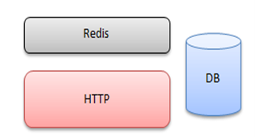

Overview
Since our main task is to implement an AR Pet Assistant, it is natural to think of Unity. Unity platform allows making real-time 3D projects for Games, Engineering, Film, etc. (Unity technology, 2021) and it is also one of the best tools for XR development (Inovecs Games, 2018). C#, backed by Microsoft (Microsoft, 2021) , is the language supported by Unity for developers.
Our project can be divided into 5 main parts: AR (Unity Engine), HCI, AI, Animation, Server. I’ll introduce them one by one.
AR
There are four major AR SDKs today: ARKit, ARCore, Vuforia and AR Foundation. All SDKs are integrated in Unity game engine. (Circuitstream, 2021)
AR Foundation: A framework purpose-built for AR development allows you to develop your app once, then deploy it across multiple mobile and wearable AR devices. It includes core features from each platform, as well as unique Unity features that include photorealistic rendering, physics, device optimizations, and more. AR Foundation is a good AR development tool for games and lightweight solutions.
Vuforia: As a leader in the AR/MR space, PTC’s Vuforia is a great development system for business-oriented projects, especially manufacturing AR solutions. The program’s flexible development engine has already been used for creating innovative workflows in multiple industries. Vuforia collaborates with Unity to help developers use augmented reality as a cross-platform SDK for Android, iOS, UWP and digital eyewear. It can use images and real objects as targets for placing content and tracking in the real world.
AR Kit and AR Core: ARKit is the go-to application for the development of AR software developed by Apple, so it is not possible to use ARKit on android phones. ARCore is in many ways an analog of ARKit – another application developed by the creators of a platform for devices using this platform. In this case, the company is Google, and the platform is Android.
SLAM AR: SLAM stands for Simultaneous Localization and Mapping. s a technology which understands the physical world through feature points. This makes it possible for AR applications to Recognize 3D Objects & Scenes, as well as to Instantly Track the world, and to overlay digital interactive augmentations. We need to apply this technology so that pets can understand and move in user’s room.
HCI
As for interaction, we use UCL’s Motion Input V2. Recent advancements in gesture recognition technology, computer vision and machine learning open up a world of new opportunities for touchless computing interactions. UCL’s MotionInput supporting DirectX v2.0 is the second iteration of our Windows based library. This uses several open-source and federated on-device machine learning models, meaning that it is privacy safe in recognising users. It captures and analyses interactions and converts them into mouse and keyboard signals for the operating system to make use of in its native user interface. (UCL CS, 2021)
AR
The main AI technology used is Automated Speech Recognition, text to speech and recommendation systems.
IBM Watson: Watson is IBM’s suite of enterprise-ready Artificial Intelligence (AI) services, applications, and tooling. (IBM, 2021) Automated Speech Recognition and Text to Speech (TTS) are integrated within IBM Watson.
Automated Speech Recognition (ASR): IBM Watson® Speech to Text technology enables fast and accurate speech transcription in multiple languages for a variety of use cases. The service leverages machine learning to combine knowledge of grammar, language structure, and the composition of audio and voice signals to accurately transcribe the human voice.
Text to speech (TTS): IBM Watson® Text to Speech is an API cloud service that enables user to convert written text into natural-sounding audio in a variety of languages and voices within an existing application or within Watson Assistant. The audio uses appropriate cadence and intonation for its language and dialect to provide voices that are smooth and natural.
Recommender system: A recommender system, or a recommendation system (sometimes replacing 'system' with a synonym such as platform or engine), is a subclass of information filtering system that seeks to predict the "rating" or "preference" a user would give to an item. One approach to the design of recommender systems that has wide use is collaborative filtering. Collaborative filtering is based on the assumption that people who agreed in the past will agree in the future, and that they will like similar kinds of items as they liked in the past. The system generates recommendations using only information about rating profiles for different users or items. By locating peer users/items with a rating history similar to the current user or item, they generate recommendations using this neighborhood.
Animations
Characters, animals, plants, and other moving objects in the game need to be designed by game animators to achieve realistic effects. Generally, 3ds Max, After Effects, and Photoshop are used to do bone skin binding production. However, due to shortness of time and people, we may not have the time to learn and do these from scratch. Website like Mixamo, Free3d provides free 3d models and animations, which could be of great help.
Server
Since our project is multi-platform, we’ll need a server to ensure devices of the same account see identical behavior of a pet, so that scenes like a cat jump from one screen to another is achievable. Pets’ data should also be shared among devices with no differences.
Game server: Our server needs to synchronize the position and status of the pet in the current scene to each client as the minimum standard. This form is a bit like a Battle.net server. The server will choose one person to be the Host, and others will be P2P to connect to the player who is in charge. STUN is to help players establish a P2P traction server, and because P2P connectivity is only about 75%, players who are unconnected will forward it through Forward. (Figure 1) A weak interaction HTTP server should also be sufficient. (Figure 2) It only needs a browser to make debugging clear.
 |
 |
Cloud server: More and more people choose cloud servers, which can provide better security and stability, and reduce the difficulty of development, operation, and maintenance. Google cloud may be a good start.
References
- Technologies, U., 2022. Unity Platform. [online] Unity. Available at: https://unity.com/products/unity-platform [Accessed 20 February 2022].
- Docs.microsoft.com. 2022. C# docs. [online] Available at: https://docs.microsoft.com/en-us/dotnet/csharp/ [Accessed 20 February 2022].
- Innovecs Games. 2022. Unity for XR Development: Why is it the Best Choice So Far?. [online] Available at: https://www.innovecsgames.com/blog/unity-for-xr-development/ [Accessed 20 February 2022].
- 3D Development Bootcamp & XR Courses | Circuit Stream. 2022. Ultimate AR Comparison Guide | Circuit Stream. [online] Available at: https://circuitstream.com/blog/augmented-reality-guide/ [Accessed 20 February 2022].
- UCL Computer Science. 2022. Touchless Computing with UCL’s MotionInput v2.0 and Microsoft. [online] Available at: https://www.ucl.ac.uk/computer-science/news/2021/jul/touchless-computing-ucls-motioninput-v20-and-microsoft [Accessed 20 February 2022].
- Ibm.com. 2022. IBM Academic Initiative. [online] Available at: https://www.ibm.com/academic/topic/artificial-intelligence [Accessed 20 February 2022].
- Francesco Ricci and Lior Rokach and Bracha Shapira, Introduction to Recommender Systems Handbook, Recommender Systems Handbook, Springer, 2011, pp. 1-35